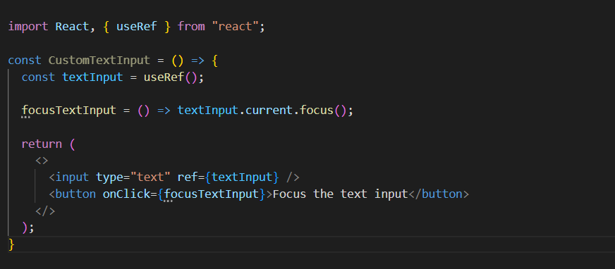
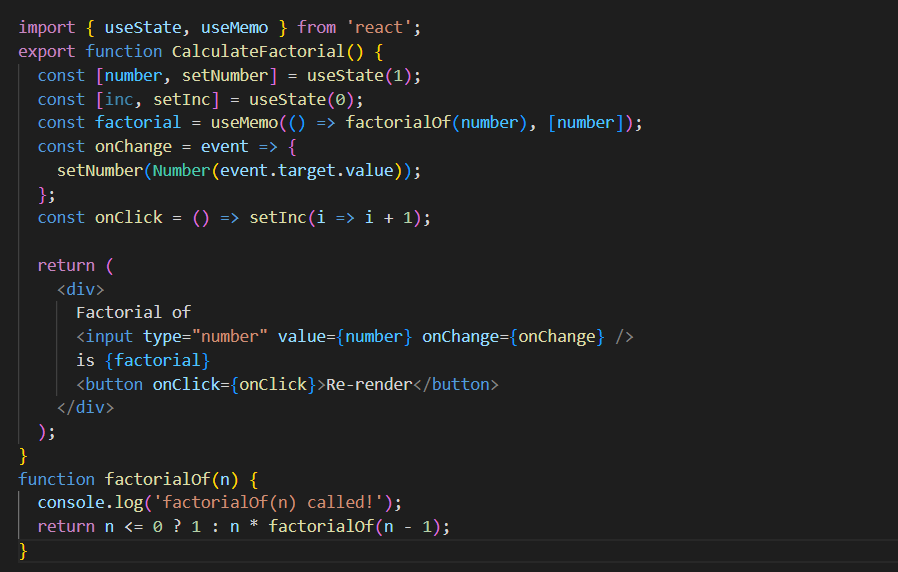

1. What is UseRef Hook ?(Implementation)
The useRef Hook allows you to persist values between renders. It can be used to store a mutable value that does not cause a re-render when updated. It can be used to access a DOM element directly.

In above example, we can see that by using useRef hook, we are accessing DOM element directly
2. What is UseMemo Hook ?(Implementation)
useMemo hook is used to memorize importent values which are of high evaluation cost. we can memorize the value and can use it on every render.

In above example we are finding factorial of number and displaying it. When we type same number again it will memorize the previous value and do not run factorial function again.
3. What is Context api
The React Context API is a way for a React app to effectively produce global variables that can be passed around. This is the alternative to "prop drilling" or moving props from grandparent to child to parent, and so on.
4. What are React Life cycles Explain each one with Example
Each component in React has a lifecycle which you can monitor and manipulate during its three main phases. The three phases are: Mounting, Updating, and Unmounting.
Mounting : constructor(), getDerivedStateFromProps(), render(), componentDidMount()
Updating : getDerivedStateFromProps(), shouldComponentUpdate(), render(), getSnapshotBeforeUpdate(), componentDidUpdate()
Unmounting : componentWillUnmount()
5. What is Props Drilling Concept ?What is State Uplifting ?
Prop drilling is basically a situation when the same data is being sent at almost every level due to requirements in the final level. In React, sharing state is accomplished by moving it up to the closest common ancestor of the components that need it. This is called “lifting state up”.
6. Difference between useEffect and useContext ?
UseEffect hook is used to mimic life cycle methods such as shouldComponentUpdate(), componentDidMount(), componentWillUnmount(). whwre as useContex hook is used to pass props directly to the child element in deeply nested tree structure.
7. Difference between callback and useCallback Hook ?
callback is a function given as argument to another function. useCallback hook is used to memeroze a callback function which can be executed based on changes in given dependencies.